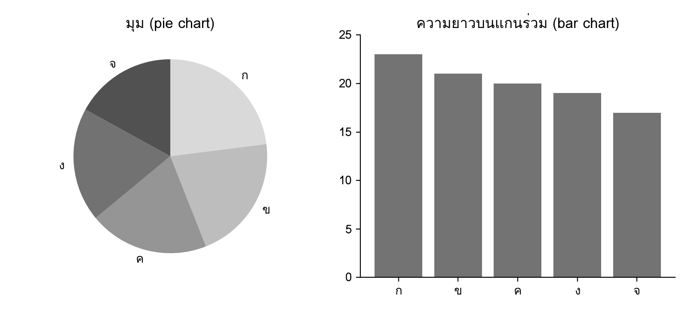
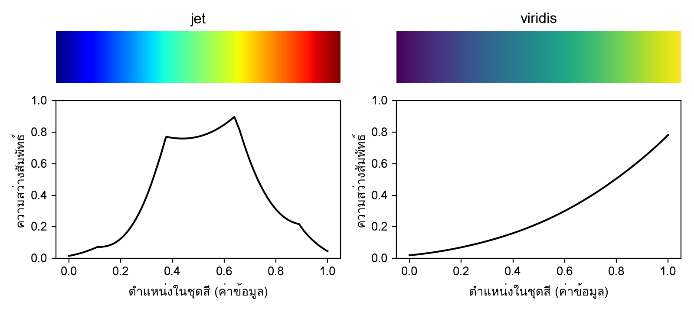
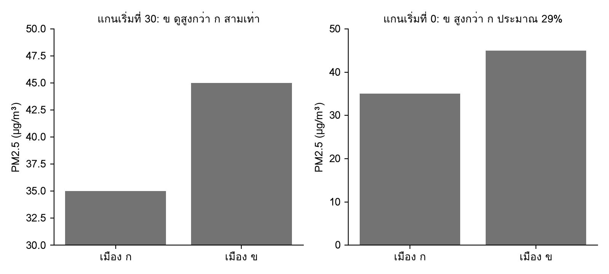
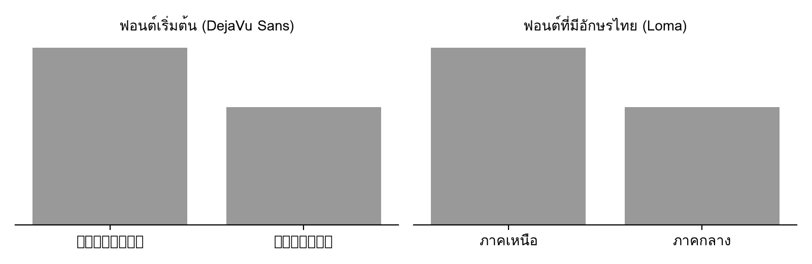

flowchart LR A["ตำแหน่ง<br/>บนแกนร่วม"] --> B["ตำแหน่ง<br/>บนแกนไม่ร่วม"] --> C["ความยาว"] --> D["มุม<br/>ความชัน"] --> E["พื้นที่"] --> F["ปริมาตร<br/>ความเข้มสี"]
11 หลักการรับรู้และการออกแบบภาพข้อมูล
ส่วนที่ 3 จบลงด้วยตาราง daily_pm25_clean ซึ่งผ่านการตรวจคุณภาพและการจัดการข้อมูลสูญหายแล้ว ตั้งแต่บทนี้เป็นต้นไป เราใช้ตารางนี้ ตอบคำถาม เครื่องมือแรกและทรงพลังที่สุดคือการนำเสนอข้อมูลด้วยภาพ (visualization) หรือกราฟ บทที่ 1 แสดงด้วย Anscombe’s quartet ว่ากราฟเผยสิ่งที่สถิติสรุปซ่อนไว้ได้ เหตุผลคือระบบการมองเห็นของมนุษย์ตรวจจับรูปแบบ ความผิดปกติ และความแตกต่างได้เร็วกว่าการอ่านตัวเลขมาก แต่ระบบเดียวกันนี้ก็ถูกหลอกได้ง่าย และบางการออกแบบทำให้ผู้อ่านเห็นสิ่งที่ไม่มีอยู่จริง
บทนี้ว่าด้วย หลักการ ที่อยู่เบื้องหลังกราฟที่ดี มาจากงานวิจัยด้านการรับรู้ทางสายตา วิทยาศาสตร์ของสี และแนวคิดเรื่องความซื่อตรงของภาพ หลักการเหล่านี้ไม่ขึ้นกับเครื่องมือ ใช้ได้ทั้งกับ seaborn, Plotly หรือแม้แต่การวาดด้วยมือ บทที่ 12 จะต่อยอดไปยัง grammar of graphics และกราฟเชิงโต้ตอบ ตัวอย่างโค้ดในบทนี้ใช้ seaborn และ matplotlib ซึ่งเป็นเครื่องมือหลักของสัปดาห์ที่ 9
วัตถุประสงค์การเรียนรู้
เมื่อจบบทนี้ ผู้อ่านสามารถ
- อธิบาย preattentive attribute และหลัก Gestalt และใช้ออกแบบกราฟที่ผู้อ่านเห็นประเด็นได้ทันที
- ใช้ลำดับความแม่นยำของการเข้ารหัสภาพเลือกวิธีแสดงค่าที่ต้องเปรียบเทียบ
- เลือกชุดสีให้ตรงกับชนิดข้อมูล และตรวจว่าผู้มีภาวะตาบอดสีอ่านได้
- เลือกชนิดกราฟจากชนิดของคำถาม
- ประเมินความซื่อตรงของกราฟ และแก้กราฟที่ชวนเข้าใจผิด
- ออกแบบ small multiples และใส่คำอธิบายประกอบกับเส้นอ้างอิงอย่างเหมาะสม
- ตั้งค่าตัวอักษรไทยในกราฟให้แสดงผลถูกต้องบนทุกระบบ
11.1 การรับรู้ทางสายตา: preattentive attribute และหลัก Gestalt
ตาเห็นอะไรก่อนที่จะคิด
เมื่อมองภาพ ระบบการมองเห็นประมวลผลคุณลักษณะบางอย่างได้ภายในเวลาสั้นมาก ก่อนที่เราจะตั้งใจมองหา คุณลักษณะเหล่านี้เรียกว่า preattentive attribute (Healey และ Enns 2012) ตัวอย่างที่สำคัญต่อการออกแบบกราฟได้แก่
| กลุ่ม | คุณลักษณะ | ตัวอย่างการใช้ในกราฟ PM2.5 |
|---|---|---|
| รูปทรง | ความยาว ความกว้าง ขนาด รูปร่าง การวางแนว | แท่งที่ยาวกว่าแท่งอื่นชัดเจน |
| สี | สีสัน (hue) ความเข้ม (intensity) | สถานีเดียวที่เป็นสีส้มท่ามกลางสถานีสีเทา |
| ตำแหน่ง | ตำแหน่งบนแกน การจัดกลุ่มเชิงพื้นที่ | จุดที่อยู่เหนือเส้นมาตรฐาน |
| การเคลื่อนไหว | การกะพริบ ทิศทาง | ใช้ในแดชบอร์ดเพื่อเรียกความสนใจ (บทที่ 20) |
นัยสำคัญต่อการออกแบบคือ สิ่งที่ต้องการให้ผู้อ่านเห็นก่อน ควรต่างจากส่วนที่เหลือด้วย preattentive attribute เพียงอย่างเดียว ตัวอย่างเช่น ถ้าต้องการให้เห็นว่าสถานีหนึ่งมีค่าสูงผิดปกติ ให้ระบายสถานีนั้นด้วยสีเข้ม และให้สถานีอื่นเป็นสีเทาอ่อน แทนที่จะให้ทุกสถานีมีสีต่างกัน เมื่อทุกอย่างมีสีสัน สีก็ไม่ได้ชี้อะไรอีกต่อไป ในทางกลับกัน การใช้สองคุณลักษณะร่วมกัน เช่น หาจุดที่ “สีแดง และ รูปสามเหลี่ยม” ท่ามกลางจุดสีแดงรูปวงกลมและจุดสีน้ำเงินรูปสามเหลี่ยม ไม่เกิดขึ้นทันที ผู้อ่านต้องไล่หาทีละจุด
หลัก Gestalt
นักจิตวิทยากลุ่ม Gestalt ศึกษาว่ามนุษย์จัดระเบียบสิ่งที่เห็นให้เป็นกลุ่มและรูปแบบอย่างไร หลักที่ใช้กับการออกแบบกราฟโดยตรงมีดังนี้ (Ware 2020)
| หลัก | ความหมาย | การใช้ในกราฟ |
|---|---|---|
| ความใกล้ชิด (proximity) | สิ่งที่อยู่ใกล้กันถูกมองว่าเป็นกลุ่มเดียวกัน | วางแท่งของภาคเดียวกันไว้ติดกัน เว้นระยะระหว่างภาค |
| ความคล้ายคลึง (similarity) | สิ่งที่มีสี รูปร่าง หรือขนาดเหมือนกันถูกมองว่าเป็นกลุ่มเดียวกัน | ใช้สีเดียวกันกับสถานีในภาคเดียวกัน |
| ความต่อเนื่อง (continuity) | ตาไล่ตามเส้นหรือทิศทางที่ต่อเนื่อง | เส้นอนุกรมเวลาทำให้เห็นแนวโน้ม แม้จุดจะกระจาย |
| การปิดล้อม (enclosure) | สิ่งที่อยู่ในกรอบเดียวกันถูกมองว่าเป็นกลุ่ม | แถบสีพื้นหลังแสดงช่วงฤดูฝุ่น |
| การเชื่อมต่อ (connection) | สิ่งที่ถูกเชื่อมด้วยเส้นถูกมองว่าสัมพันธ์กัน | เส้นเชื่อมจุดของสถานีเดียวกันข้ามปี |
หลักเหล่านี้ทำงานอยู่เสมอ ไม่ว่าผู้ออกแบบจะตั้งใจหรือไม่ ถ้าเลือกสีให้สถานีโดยสุ่ม ผู้อ่านจะจัดกลุ่มสถานีที่บังเอิญได้สีคล้ายกันเข้าด้วยกันโดยอัตโนมัติ และอาจคิดว่ามีความสัมพันธ์ที่ไม่มีอยู่จริง การออกแบบที่ดีจึงต้องใช้หลักเหล่านี้ให้สอดคล้องกับโครงสร้างของข้อมูล
11.2 ลำดับความแม่นยำของการเข้ารหัสภาพ (Cleveland & McGill)
การเข้ารหัสภาพคืออะไร
กราฟทุกกราฟแปลงค่าของข้อมูลเป็นคุณสมบัติทางภาพ เช่น ค่า PM2.5 ที่สูงกลายเป็นแท่งที่ยาว จุดที่อยู่สูง หรือสีที่เข้ม การแปลงนี้เรียกว่า การเข้ารหัสภาพ (visual encoding) คำถามสำคัญคือ ผู้อ่านถอดรหัสกลับเป็นค่าได้แม่นยำเพียงใด
การทดลองของ Cleveland และ McGill
ในปี ค.ศ. 1984 William Cleveland และ Robert McGill ทดลองให้ผู้เข้าร่วมประมาณสัดส่วนระหว่างค่าสองค่าที่แสดงด้วยการเข้ารหัสต่างแบบ แล้ววัดความคลาดเคลื่อน (Cleveland และ McGill 1984) ผลการทดลองและงานที่ตามมาให้ลำดับความแม่นยำโดยประมาณดังนี้
ลำดับนี้อ่านจากซ้าย (แม่นที่สุด) ไปขวา (แม่นน้อยที่สุด) Heer และ Bostock ทำซ้ำการทดลองนี้ด้วยผู้เข้าร่วมจำนวนมากผ่านอินเทอร์เน็ต และได้ผลที่สอดคล้องกันโดยรวม (Heer และ Bostock 2010)

ภาพที่ 11.1 แสดงค่าชุดเดียวกันสองแบบ ใน pie chart ผู้อ่านต้องเปรียบเทียบมุม ซึ่งยากมากเมื่อค่าใกล้กัน ส่วน bar chart ใช้ความยาวบนแกนร่วม ลำดับของค่าเห็นได้ทันที
นัยต่อการออกแบบ
- ค่าที่ต้องเปรียบเทียบให้แม่นยำ ให้แสดงด้วยตำแหน่งบนแกนร่วม เช่น จุดหรือแท่งที่เรียงบนแกนเดียวกัน
- สีและขนาดเหมาะกับการแสดงภาพรวมหรือแยกกลุ่ม ไม่เหมาะกับการอ่านค่าละเอียด heatmap ที่ใช้ความเข้มสีจึงดีสำหรับการเห็นรูปแบบ แต่ถ้าผู้อ่านต้องรู้ค่าที่แน่นอน ต้องใส่ตัวเลขกำกับ
- การเปรียบเทียบที่สำคัญที่สุดควรอยู่บนการเข้ารหัสที่แม่นที่สุด ถ้าคำถามคือ “ภาคใดสูงที่สุด” ให้ภาคอยู่บนแกนและค่าเป็นตำแหน่ง ไม่ใช่ให้ภาคเป็นสี
ลำดับนี้ไม่ได้แปลว่าห้ามใช้การเข้ารหัสที่แม่นน้อย แผนที่ choropleth ในบทที่ 17 ใช้สีเพราะตำแหน่งบนแผนที่ถูกใช้แสดงพิกัดไปแล้ว และ heatmap ใช้สีเพราะแกนทั้งสองถูกใช้แสดงเดือนและปี การเลือกเป็นการชั่งน้ำหนักว่าข้อมูลมิติใดสำคัญที่สุดและควรได้การเข้ารหัสที่ดีที่สุด
11.3 วิทยาศาสตร์ของสี: perceptual uniformity, sequential/diverging/categorical, ภาวะตาบอดสี
สีไม่ได้เป็นมิติเดียว
สีที่เราเห็นมีอย่างน้อยสามมิติ คือ สีสัน (hue) เช่น แดง เขียว น้ำเงิน ความสว่าง (lightness) และ ความอิ่มตัว (chroma หรือ saturation) มิติที่สำคัญที่สุดต่อการอ่านค่าคือความสว่าง เพราะมนุษย์รับรู้ลำดับของความสว่างได้โดยธรรมชาติ ภาพขาวดำยังอ่านได้ก็เพราะความสว่าง ส่วนสีสันไม่มีลำดับในตัว เราไม่ได้รู้สึกว่าสีเขียว “มากกว่า” สีแดง
perceptual uniformity
ชุดสีที่ดีสำหรับข้อมูลต่อเนื่องควรมีคุณสมบัติ perceptual uniformity คือ การเปลี่ยนค่าข้อมูลเท่ากันให้ความรู้สึกว่าสีเปลี่ยนเท่ากัน ตลอดทั้งช่วง ชุดสี rainbow หรือ jet ซึ่งเคยเป็นค่าเริ่มต้นของโปรแกรมหลายตัว ไม่มีคุณสมบัตินี้ ความสว่างของมันขึ้นลงไม่สม่ำเสมอ ทำให้เกิดขอบปลอมในภาพ บริเวณที่ค่าเปลี่ยนเพียงเล็กน้อยอาจดูเหมือนเปลี่ยนมาก (Borland และ Taylor II 2007) ชุดสี viridis ซึ่งออกแบบมาให้ความสว่างเพิ่มขึ้นสม่ำเสมอ ได้กลายเป็นค่าเริ่มต้นของ matplotlib ตั้งแต่รุ่น 2.0 (Walt และ Smith 2015)

ภาพที่ 11.2 แสดงว่า ความสว่างของ jet ขึ้นถึงจุดสูงสุดตรงกลางชุดสี (สีเหลืองเขียว) แล้วลดลง ค่ากลางของข้อมูลจึงดูโดดเด่นที่สุด ทั้งที่ไม่ได้มีความหมายพิเศษใด ส่วน viridis มีความสว่างเพิ่มขึ้นต่อเนื่อง ค่าที่สูงกว่าจึงดูสว่างกว่าเสมอ และยังอ่านได้เมื่อพิมพ์เป็นขาวดำ
ชนิดของชุดสีตามชนิดข้อมูล
| ชนิดข้อมูล | ชนิดชุดสี | ลักษณะ | ตัวอย่าง PM2.5 | ใน seaborn/matplotlib |
|---|---|---|---|---|
| หมวดหมู่ไม่มีลำดับ | categorical | สีสันต่างกันชัด ความสว่างใกล้กัน | ภาค ประเภทสถานี | "colorblind", "tab10" |
| ค่าต่อเนื่องจากต่ำไปสูง | sequential | สีเดียวหรือสองสี ไล่ความสว่าง | ค่า PM2.5 ใน heatmap | "viridis", "rocket", "mako" |
| ค่าที่มีจุดกลางมีความหมาย | diverging | สองสีออกจากจุดกลางที่สว่าง | ส่วนต่างจากมาตรฐาน 37.5 µg/m³ | "RdBu_r", "vlag" |
Cynthia Brewer ออกแบบชุดสีสามชนิดนี้สำหรับแผนที่ไว้อย่างเป็นระบบ และชุดสี ColorBrewer ยังใช้กันแพร่หลาย (Harrower และ Brewer 2003) ข้อผิดพลาดที่พบบ่อยคือการใช้ชุดสีผิดชนิด เช่น ใช้ชุดสี categorical กับค่าต่อเนื่อง ซึ่งทำให้ผู้อ่านเห็นกลุ่มที่ไม่มีอยู่จริง หรือใช้ชุดสี diverging กับข้อมูลที่ไม่มีจุดกลาง ซึ่งทำให้ค่ากลางของข้อมูลดูเหมือนมีความหมายพิเศษ
ชุดสี diverging ต้องกำหนดจุดกลางให้ตรงกับค่าที่มีความหมาย เช่น เมื่อแสดงส่วนต่างจากมาตรฐาน ให้จุดกลางอยู่ที่ศูนย์
import seaborn as sns
deviation = monthly_table - 37.5 # ตารางเดือน × ปี ลบด้วยมาตรฐาน
sns.heatmap(deviation, cmap="RdBu_r", center=0) # สีขาว = เท่ามาตรฐาน แดง = เกิน น้ำเงิน = ต่ำกว่าภาวะตาบอดสี
ภาวะบกพร่องการเห็นสีพบได้ไม่น้อย โดยเฉพาะในเพศชาย แบบที่พบบ่อยที่สุดคือการแยกสีแดงกับสีเขียวได้ยาก (Birch 2012) หลักปฏิบัติสำหรับกราฟที่ผู้อ่านทุกคนอ่านได้มีดังนี้
- หลีกเลี่ยงการใช้คู่สีแดงกับเขียวเป็นตัวแยกกลุ่มหลัก ซึ่งน่าเสียดายว่าเป็นคู่สีที่นิยมใช้แทน “ดี” กับ “ไม่ดี”
- ใช้ชุดสีที่ออกแบบมาให้ผู้มีภาวะตาบอดสีอ่านได้ เช่น
sns.color_palette("colorblind")หรือตระกูล viridis - อย่าใช้สีเป็นช่องทางเดียวในการสื่อความหมาย ใช้ป้ายกำกับ รูปร่าง หรือรูปแบบเส้นร่วมด้วย
- จำกัดจำนวนสีในกราฟเดียวไว้ที่ประมาณ 6–8 สี ถ้ามีกลุ่มมากกว่านั้น ให้ใช้ small multiples (หัวข้อ 11.6) หรือเน้นเฉพาะกลุ่มที่สำคัญแล้วให้กลุ่มอื่นเป็นสีเทา
ข้อสังเกตเกี่ยวกับข้อมูลคุณภาพอากาศ ดัชนีคุณภาพอากาศ (AQI) ของหลายประเทศรวมถึงไทยใช้ระดับสีตั้งแต่ฟ้าหรือเขียวไปจนถึงแดงหรือม่วง ซึ่งผู้อ่านคุ้นเคย (ภาคผนวก ง) การใช้ระดับสีเหล่านี้ในกราฟช่วยให้สื่อสารได้ง่าย แต่ต้องมีป้ายกำกับระดับควบคู่เสมอ เพราะผู้อ่านที่มีภาวะตาบอดสีอาจแยกระดับที่อยู่ติดกันไม่ได้
11.4 การเลือกกราฟตามคำถาม
เริ่มจากคำถาม ไม่ใช่จากชนิดกราฟ
กราฟทุกภาพควรตอบได้ว่า “ภาพนี้ตอบคำถามข้อใดใน questions.md” ถ้าตอบไม่ได้ แปลว่ากำลังวาดเพราะวาดได้ ไม่ใช่เพราะต้องรู้ คำถามเชิงสำรวจส่วนใหญ่จัดอยู่ในสี่กลุ่ม แต่ละกลุ่มมีกราฟที่เหมาะสม (Wilke 2019)
| ชนิดคำถาม | ตัวอย่างคำถาม PM2.5 | กราฟที่เหมาะ | หลีกเลี่ยง |
|---|---|---|---|
| การแจกแจง | ค่าเฉลี่ยรายวันส่วนใหญ่อยู่ช่วงใด เกินมาตรฐานบ่อยเพียงใด | histogram, ECDF, density | แท่งค่าเฉลี่ยอย่างเดียว |
| การเปรียบเทียบ | ภาคเหนือสูงกว่าภาคอื่นในฤดูแล้งหรือไม่ | box plot, violin, strip plot, dot plot, bar (สำหรับจำนวนหรือสัดส่วน) | pie chart หลายชิ้น |
| ความสัมพันธ์ | วันที่ค่าเฉลี่ยสูง ค่าสูงสุดรายชั่วโมงสูงตามหรือไม่ | scatter plot, 2D histogram | scatter หลายแสนจุดแบบทึบ |
| การเปลี่ยนแปลงตามเวลา | มีรูปแบบรายเดือนหรือแนวโน้มรายปีหรือไม่ | line chart, heatmap เดือน × ปี | แท่งเรียงวันละแท่ง |
ข้อมูลสำหรับตัวอย่างในบทนี้
ตัวอย่างโค้ดในบทนี้ใช้ค่าเฉลี่ยรายวันที่ข้อมูลครบจาก daily_pm25_clean ในช่วงสำรวจ
import duckdb
import matplotlib.pyplot as plt
import pandas as pd
import seaborn as sns
con = duckdb.connect("data/pm25.duckdb", read_only=True)
daily = con.execute("""
SELECT d.station_id, d.date, d.pm25_mean, d.pm25_max, d.n_hours, s.province, s.region
FROM daily_pm25_clean AS d JOIN stations AS s USING (station_id)
WHERE d.is_complete AND d.date < DATE '2024-01-01'
""").df()
daily["date"] = pd.to_datetime(daily["date"])การแจกแจง: histogram และ ECDF
ค่า PM2.5 มักเบ้ขวา คือ ค่าส่วนใหญ่ต่ำ แต่มีวันที่สูงมากจำนวนหนึ่ง histogram ที่ใช้แกนเชิงเส้นจะอัดค่าส่วนใหญ่ไว้ทางซ้าย การใช้แกนแบบ log ช่วยให้เห็นรายละเอียดของช่วงค่าต่ำได้ดีขึ้น แต่ต้องเขียนกำกับให้ชัด
fig, ax = plt.subplots(figsize=(8, 4))
sns.histplot(data=daily, x="pm25_mean", bins=60, log_scale=True, ax=ax)
ax.axvline(37.5, color="black", linestyle="--")
ax.set(xlabel="PM2.5 เฉลี่ย 24 ชม. (µg/m³, แกน log)", ylabel="จำนวนสถานี-วัน")ECDF (empirical cumulative distribution function) เป็นทางเลือกที่มักถูกมองข้าม แกน y บอกสัดส่วนของข้อมูลที่มีค่าไม่เกินค่าบนแกน x ข้อดีคือไม่ต้องเลือกจำนวน bin และอ่านสัดส่วนที่เกินมาตรฐานได้โดยตรง เช่น ถ้าเส้นตัดค่า 37.5 ที่ระดับ 0.85 แปลว่าร้อยละ 15 ของวันเกินมาตรฐาน
sns.ecdfplot(data=daily, x="pm25_mean", hue="region")
plt.axvline(37.5, color="black", linestyle="--")การเปรียบเทียบ: box plot และ dot plot
order = daily.groupby("region")["pm25_mean"].median().sort_values().index
ax = sns.boxplot(data=daily, x="pm25_mean", y="region", order=order,
showfliers=False, color="lightsteelblue")
ax.axvline(37.5, color="black", linestyle="--")
ax.set(xlabel="PM2.5 เฉลี่ย 24 ชม. (µg/m³)", ylabel="")ข้อสังเกตเชิงออกแบบสามข้อ ข้อแรก เรียงกลุ่มตามมัธยฐาน ไม่ใช่ตามตัวอักษร ผู้อ่านจึงอ่านลำดับได้ทันที ข้อสอง วางชื่อภาคบนแกน y เพื่อให้ป้ายภาษาไทยที่ยาวไม่ซ้อนกัน ข้อสาม box plot ซ่อนจำนวนข้อมูลในแต่ละกลุ่ม ถ้าภาคหนึ่งมีสถานีเดียว ต้องแจ้งผู้อ่าน เช่น ใส่จำนวนสถานีไว้ในป้ายกำกับ
ความสัมพันธ์: scatter plot และ overplotting
เมื่อจุดมีจำนวนมาก scatter plot จะกลายเป็นก้อนทึบ เรียกว่า overplotting ผู้อ่านไม่เห็นว่าบริเวณใดมีจุดหนาแน่น วิธีแก้ได้แก่ ลดความทึบของจุดด้วย alpha ใช้จุดเล็ก สุ่มตัวอย่าง หรือเปลี่ยนเป็น 2D histogram ซึ่งแสดงความหนาแน่นด้วยสี
sns.histplot(data=daily, x="pm25_mean", y="pm25_max",
bins=80, log_scale=True, cmap="mako")บทที่ 12 อธิบายวิธีจัดการข้อมูลขนาดใหญ่มากด้วย Datashader
การเปลี่ยนแปลงตามเวลา: line chart และ heatmap
line chart เหมาะกับการแสดงแนวโน้มและรูปแบบตามเวลา ส่วน heatmap ที่มีแกนหนึ่งเป็นเดือนและอีกแกนเป็นปี เหมาะกับการเห็นรูปแบบตามฤดูกาลที่ซ้ำทุกปี และปีที่ผิดปกติ
heat = (daily.assign(year=daily["date"].dt.year, month=daily["date"].dt.month)
.query("region == 'เหนือ'")
.pivot_table(index="year", columns="month", values="pm25_mean", aggfunc="median"))
sns.heatmap(heat, cmap="rocket_r", annot=True, fmt=".0f", cbar_kws={"label": "µg/m³"})11.5 ความซื่อตรงของภาพ: lie factor, data-ink (Tufte), แกนที่ถูกตัด
lie factor
Edward Tufte เสนอว่ากราฟที่ซื่อตรงต้องแสดงขนาดของผลในภาพให้เป็นสัดส่วนกับขนาดของผลในข้อมูล และนิยาม lie factor ไว้ดังนี้ (Tufte 2001)
\[ \text{lie factor} = \frac{\text{ขนาดของผลที่แสดงในภาพ}}{\text{ขนาดของผลในข้อมูล}} \tag{11.1}\]
โดยที่ขนาดของผลคำนวณเป็นการเปลี่ยนแปลงสัมพัทธ์ \((x_2 - x_1)/x_1\) กราฟที่ซื่อตรงมี lie factor ใกล้ 1 ค่าที่มากกว่า 1 มากแปลว่ากราฟขยายผลเกินจริง
ตัวอย่างกับตัวเลขสมมุติ เมือง ก มีค่าเฉลี่ย PM2.5 35 µg/m³ และเมือง ข มี 45 µg/m³ ขนาดของผลในข้อมูลคือ \((45 - 35)/35 \approx 0.29\) ถ้าวาด bar chart ที่แกน y เริ่มที่ 30 ความสูงของแท่งในภาพคือ 5 และ 15 หน่วย ขนาดของผลในภาพคือ \((15 - 5)/5 = 2\) lie factor จึงเท่ากับ \(2 / 0.29 \approx 7\) กราฟนี้ขยายความต่างประมาณเจ็ดเท่า

แกนที่ถูกตัด
ภาพที่ 11.3 แสดงหลักการที่สำคัญที่สุดข้อหนึ่ง bar chart ต้องเริ่มที่ศูนย์ เพราะผู้อ่านอ่านค่าจากความยาวของแท่ง ถ้าตัดแกน ความยาวก็ไม่เป็นสัดส่วนกับค่าอีกต่อไป ส่วน line chart และ scatter plot ซึ่งผู้อ่านอ่านจากตำแหน่ง ไม่จำเป็นต้องเริ่มที่ศูนย์ การเริ่มที่ศูนย์อาจทำให้การเปลี่ยนแปลงที่สำคัญมองไม่เห็นด้วยซ้ำ แต่ต้องติดป้ายแกนให้ชัด
| กฎ | เหตุผล |
|---|---|
| bar chart ต้องเริ่มที่ศูนย์ | ความยาวของแท่งคือค่า |
| line chart และ scatter plot ไม่จำเป็นต้องเริ่มที่ศูนย์ | อ่านจากตำแหน่ง แต่ต้องติดป้ายแกน |
| กราฟที่ต้องเปรียบเทียบกันต้องใช้สเกลเดียวกัน | ถ้าแต่ละกราฟมีสเกลของตัวเอง ผู้อ่านจะเปรียบเทียบความสูงผิด |
| ใช้แกน log ได้ แต่ต้องเขียนกำกับ | ผู้อ่านทั่วไปอาจอ่านแกน log เป็นแกนเชิงเส้น |
| ระบุหน่วยเสมอ | “PM2.5 (µg/m³)” ไม่ใช่ “pm25_mean” |
| หลีกเลี่ยงแกนคู่ | ผู้ออกแบบเลือกช่วงของแต่ละแกนเองได้ ทำให้เส้นสองเส้นดูสัมพันธ์หรือไม่สัมพันธ์ตามต้องการ |
แถวสุดท้ายของ ตารางที่ 11.5 ควรขยายความ กราฟแกนคู่ เช่น PM2.5 บนแกนซ้ายและจำนวนจุดความร้อนบนแกนขวา เป็นที่นิยมเพราะประหยัดพื้นที่ แต่ความสัมพันธ์ที่ผู้อ่านเห็น ขึ้นกับว่าผู้ออกแบบเลือกช่วงของแต่ละแกนอย่างไร การเลื่อนช่วงของแกนหนึ่งทำให้เส้นสองเส้นทับกันพอดีหรือแยกออกจากกันได้ตามต้องการ ทางเลือกที่ซื่อตรงกว่าคือวาดสองกราฟซ้อนในแนวตั้งที่ใช้แกน x ร่วมกัน หรือวาด scatter plot ของสองตัวแปรโดยตรง
data-ink
Tufte เสนอแนวคิด data-ink ratio คือสัดส่วนของหมึกที่ใช้แสดงข้อมูลจริงต่อหมึกทั้งหมดในกราฟ และแนะนำให้ลดหมึกที่ไม่ได้แสดงข้อมูล (non-data ink) เช่น เส้นตารางที่หนาเกินไป กรอบรอบกราฟ เงา หรือผลแบบสามมิติ (Tufte 2001) หลักการนี้มีประโยชน์ในการลดสิ่งรบกวน แต่ไม่ควรตีความสุดโต่ง งานวิจัยภายหลังพบว่าองค์ประกอบบางอย่างที่ Tufte จัดเป็นหมึกส่วนเกิน เช่น ภาพประกอบที่เกี่ยวข้องกับเนื้อหา อาจช่วยให้ผู้อ่านจำกราฟได้ดีขึ้นโดยไม่ลดความแม่นยำในการอ่าน (Bateman และคณะ 2010) แนวทางที่สมดุลคือ ตัดสิ่งที่ไม่ช่วยให้ผู้อ่านเข้าใจข้อมูล และเก็บสิ่งที่ช่วย เช่น เส้นอ้างอิงและคำอธิบายประกอบ
การเลือกข้อมูลเพื่อเข้าข้าง
ความซื่อตรงไม่ได้อยู่ที่แกนและหมึกเท่านั้น แต่อยู่ที่ ข้อมูลที่เลือกแสดง ด้วย เช่น แสดงเฉพาะเดือนมีนาคมแล้วให้ผู้อ่านเข้าใจว่าเป็นภาพของทั้งปี เลือกเฉพาะสถานีที่สนับสนุนข้อสรุป หรือเลือกจุดเริ่มต้นของอนุกรมเวลาที่ทำให้แนวโน้มดูเพิ่มขึ้นหรือลดลง ปัญหาเหล่านี้เป็นรูปหนึ่งของ garden of forking paths ในบทที่ 4 และกรณี Challenger ในบทที่ 0 หลักปฏิบัติคือ แสดงข้อมูลทั้งหมดก่อน แล้วจึงซูมเข้าไปยังส่วนที่สนใจ พร้อมบอกเหตุผลที่เลือก
11.6 small multiples และการเปรียบเทียบ
ปัญหาของกราฟที่ใส่ทุกอย่าง
เมื่อต้องการเปรียบเทียบรูปแบบตามเวลาของหลายสถานี ทางเลือกแรกที่หลายคนทำคือวาดเส้นของทุกสถานีในกราฟเดียว แต่ละสถานีคนละสี เมื่อมีสถานีเกินห้าหกแห่ง กราฟจะกลายเป็นเส้นพันกันที่อ่านไม่ออก สีก็มากเกินกว่าจะแยกได้ และผู้มีภาวะตาบอดสีอ่านไม่ได้เลย
small multiples
Tufte เรียกวิธีแก้ปัญหานี้ว่า small multiples คือชุดของกราฟขนาดเล็กหลายกราฟที่ออกแบบเหมือนกันทุกประการ ต่างกันเพียงข้อมูลที่แสดง (Tufte 1990) ในภาษาของ grammar of graphics (บทที่ 12) เรียกว่า facet ผู้อ่านเรียนรู้วิธีอ่านกราฟเพียงครั้งเดียว แล้วใช้สายตาเปรียบเทียบข้ามกราฟได้ทันที
monthly = (daily.assign(month=daily["date"].dt.month)
.groupby(["region", "station_id", "month"], as_index=False)["pm25_mean"]
.median())
g = sns.relplot(data=monthly, x="month", y="pm25_mean", units="station_id", estimator=None,
col="region", col_wrap=2, kind="line", color="0.3", height=2.6, aspect=1.4)
g.refline(y=37.5, linestyle="--", color="black")
g.set_axis_labels("เดือน", "มัธยฐาน PM2.5 (µg/m³)")
g.set_titles("{col_name}")โค้ดนี้วาดหนึ่งแผงต่อภาค แต่ละแผงมีเส้นของทุกสถานีในภาคนั้นเป็นสีเทาเดียวกัน (units="station_id" กับ estimator=None วาดเส้นแยกต่อสถานีโดยไม่เฉลี่ย) และมีเส้นมาตรฐานเป็นเส้นอ้างอิงในทุกแผง
หลักการออกแบบ small multiples
| หลักการ | เหตุผล |
|---|---|
| ใช้สเกลเดียวกันทุกแผง | ผู้อ่านเปรียบเทียบความสูงข้ามแผงได้ถูกต้อง (seaborn ใช้ sharey=True เป็นค่าเริ่มต้น) |
| เรียงแผงตามลำดับที่มีความหมาย | เช่น ตามค่ามัธยฐาน หรือตามภูมิศาสตร์ ไม่ใช่ตามตัวอักษร |
| ใส่เส้นอ้างอิงเดียวกันทุกแผง | เป็นจุดเทียบร่วมที่ช่วยให้เปรียบเทียบข้ามแผงได้ |
| ลดสิ่งที่ซ้ำในแต่ละแผง | ป้ายแกนแสดงเฉพาะแผงขอบ ชื่อแผงสั้นและชัด |
| แสดงบริบทในทุกแผงเมื่อจำเป็น | เช่น เส้นสีเทาจางของภาพรวมทั้งประเทศ ให้แต่ละแผงเทียบกับภาพรวมได้ |
ถ้าแต่ละแผงมีช่วงค่าต่างกันมาก เช่น ภาคใต้มีค่าต่ำกว่าภาคเหนือมาก การใช้สเกลร่วมอาจทำให้รายละเอียดของภาคใต้มองไม่เห็น การปิด sharey ทำได้ แต่ต้องบอกผู้อ่านอย่างชัดเจนในคำบรรยายภาพ เพราะผู้อ่านจะเปรียบเทียบความสูงข้ามแผงโดยอัตโนมัติ
11.7 การใส่คำอธิบายประกอบและเส้นอ้างอิง (มาตรฐาน 37.5 µg/m³)
ทำไมต้องมีเส้นอ้างอิง
ตัวเลข 45 µg/m³ บนแกนไม่ได้บอกผู้อ่านส่วนใหญ่ว่าสูงหรือต่ำ เส้นอ้างอิง (reference line) ให้บริบทนั้น ผู้อ่านเห็นทันทีว่าค่าใดอยู่เหนือหรือใต้เกณฑ์ สำหรับข้อมูล PM2.5 เส้นอ้างอิงที่สำคัญคือมาตรฐานค่าเฉลี่ย 24 ชั่วโมงของไทย 37.5 µg/m³ ซึ่งมีผลตั้งแต่ พ.ศ. 2566 (คณะกรรมการสิ่งแวดล้อมแห่งชาติ 2022) และแนวทางขององค์การอนามัยโลก 15 µg/m³ (World Health Organization 2021)
ข้อควรระวังคือ เส้นอ้างอิงต้องตรงกับชนิดของค่าที่แสดง มาตรฐาน 37.5 µg/m³ กำหนดสำหรับค่าเฉลี่ย 24 ชั่วโมง การวาดเส้นนี้บนกราฟของค่ารายชั่วโมงทำให้ผู้อ่านเข้าใจผิดว่าทุกชั่วโมงที่เกินเส้นคือการละเมิดมาตรฐาน ถ้าต้องแสดงค่ารายชั่วโมง ให้ระบุในคำบรรยายว่าเส้นเป็นมาตรฐานของค่าเฉลี่ยรายวันที่แสดงไว้เพื่อเป็นบริบทเท่านั้น หรือไม่วาดเส้นเลย
คำอธิบายประกอบ
คำอธิบายประกอบ (annotation) คือข้อความที่วางบนกราฟเพื่อชี้ประเด็น เช่น ชื่อของเส้นอ้างอิง ค่าสูงสุด หรือเหตุการณ์ที่อธิบายรูปแบบที่เห็น คำอธิบายประกอบที่ดีเปลี่ยนกราฟจาก “ภาพที่ผู้อ่านต้องตีความเอง” เป็น “ภาพที่บอกประเด็น”
st = daily.query("station_id == '35t'").sort_values("date")
fig, ax = plt.subplots(figsize=(8, 3.5))
ax.plot(st["date"], st["pm25_mean"], lw=0.8, color="0.3")
ax.axhline(37.5, color="black", linestyle="--", lw=1)
ax.annotate("มาตรฐานไทย 37.5 µg/m³ (เฉลี่ย 24 ชม.)", xy=(st["date"].iloc[0], 37.5),
xytext=(0, 4), textcoords="offset points", fontsize=9)
peak = st.loc[st["pm25_mean"].idxmax()]
ax.annotate(f"สูงสุด {peak['pm25_mean']:.0f} µg/m³", xy=(peak["date"], peak["pm25_mean"]),
xytext=(20, -10), textcoords="offset points", arrowprops={"arrowstyle": "->"})
ax.set(xlabel="", ylabel="PM2.5 เฉลี่ยรายวัน (µg/m³)")ชื่อกราฟที่บอกข้อค้นพบ
ชื่อกราฟแบบบรรยาย เช่น “ค่า PM2.5 รายเดือนแยกตามภาค” บอกว่ากราฟแสดงอะไร แต่ไม่บอกว่าผู้อ่านควรเห็นอะไร ชื่อกราฟแบบข้อค้นพบ เช่น “ภาคเหนือมีค่าเกินมาตรฐานเกือบทุกปีในเดือนมีนาคม” บอกประเด็นทันที และผู้อ่านใช้กราฟเป็นหลักฐาน แนวทางนี้เป็นหัวใจของการเล่าเรื่องด้วยข้อมูลในบทที่ 19 ข้อควรระวังคือ ชื่อกราฟแบบข้อค้นพบต้องใช้ถ้อยคำที่ตรงกับระดับหลักฐานตามบทที่ 4 ถ้ากราฟมาจากข้อมูลช่วงสำรวจ ให้ใช้คำว่า “บ่งชี้” ไม่ใช่ “พิสูจน์”
รายละเอียดที่ทำให้กราฟอ่านง่าย
| องค์ประกอบ | แนวทาง |
|---|---|
| ป้ายแกน | ใช้ภาษาที่ผู้อ่านเข้าใจพร้อมหน่วย ไม่ใช่ชื่อคอลัมน์ |
| ป้ายกำกับโดยตรง | วางชื่อกลุ่มไว้ที่ปลายเส้นแทนการใช้ legend เมื่อทำได้ ผู้อ่านไม่ต้องมองสลับไปมา |
| ตัวเลขบนแท่ง | ใส่เมื่อผู้อ่านต้องรู้ค่าที่แน่นอน และไม่มีแท่งมากเกินไป |
| จำนวนข้อมูล | ระบุ n ในป้ายหรือคำบรรยายเมื่อกลุ่มมีขนาดต่างกันมาก |
| แหล่งข้อมูล | ระบุที่มาและช่วงเวลาในคำบรรยายภาพ เช่น “ข้อมูล: Air4Thai กรมควบคุมมลพิษ ค.ศ. 2020–2023” |
11.8 ตัวอักษรไทยในกราฟ
ทำไมภาษาไทยกลายเป็นสี่เหลี่ยม
ฟอนต์เริ่มต้นของ matplotlib คือ DejaVu Sans ซึ่งไม่มีอักษรไทย เมื่อป้ายกำกับเป็นภาษาไทย matplotlib จะแสดงเป็นสี่เหลี่ยมว่าง (เรียกกันว่า tofu) และแสดงคำเตือนว่าไม่พบ glyph ปัญหานี้ไม่เกิดกับ Plotly ซึ่งแสดงผลในเบราว์เซอร์และใช้ฟอนต์ของระบบ แต่เกิดกับ matplotlib และ seaborn ซึ่งวาดภาพเอง

ตั้งค่าฟอนต์
วิธีแก้คือสั่งให้ matplotlib ใช้ฟอนต์ที่มีอักษรไทยก่อนวาดกราฟ ชื่อฟอนต์ที่มีอยู่ต่างกันในแต่ละระบบปฏิบัติการ จึงควรเขียนโค้ดที่เลือกฟอนต์แรกที่พบจากรายการ แทนการระบุชื่อเดียวตายตัว
"""src/viz_style.py: ตั้งค่ารูปแบบกราฟของโครงการ (import ในทุก notebook)"""
import matplotlib.pyplot as plt
import seaborn as sns
from matplotlib import font_manager
THAI_FONTS = ["Sarabun", "Tahoma", "Leelawadee UI", "Thonburi", "Noto Sans Thai", "Loma", "Garuda"]
def setup() -> str:
"""เลือกฟอนต์ไทยตัวแรกที่มีในเครื่อง แล้วตั้งค่า seaborn คืนชื่อฟอนต์ที่ใช้"""
available = {f.name for f in font_manager.fontManager.ttflist}
font = next((f for f in THAI_FONTS if f in available), None)
if font is None:
raise RuntimeError("ไม่พบฟอนต์ไทย ติดตั้ง Sarabun แล้วเรียก font_manager.fontManager.addfont(path)")
sns.set_theme(style="whitegrid", palette="colorblind", font=font)
plt.rcParams["axes.unicode_minus"] = False # ให้เครื่องหมายลบแสดงถูกต้อง
return font| ระบบ | ฟอนต์ที่มักมีอยู่แล้ว | ถ้าไม่มี |
|---|---|---|
| Windows | Tahoma, Leelawadee UI | — |
| macOS | Thonburi, Tahoma | — |
| Linux และ Colab | มักไม่มีเป็นค่าเริ่มต้น บางระบบมีชุดฟอนต์ TLWG เช่น Loma และ Garuda | ดาวน์โหลด Sarabun จาก Google Fonts แล้วใช้ font_manager.fontManager.addfont("path/Sarabun-Regular.ttf") |
การเก็บการตั้งค่านี้ไว้ใน src/viz_style.py แล้ว import ในทุก notebook ทำให้กราฟทุกภาพในโครงการมีรูปแบบเดียวกัน และเมื่อเปลี่ยนเครื่อง ก็แก้ที่ไฟล์เดียว ฉบับในคู่มือปฏิบัติการสัปดาห์ที่ 9 ขยายฟังก์ชันนี้ให้รับ font_path สำหรับเครื่องที่ต้องเพิ่มฟอนต์เอง เช่น Colab และเพิ่มฟังก์ชัน add_std_line() สำหรับวาดเส้นมาตรฐาน ภาคผนวก ฉ รวบรวมปัญหาภาษาไทยที่พบบ่อยและวิธีแก้
ข้อควรระวังอื่นของภาษาไทยในกราฟ
- ป้ายยาวซ้อนกัน ชื่อจังหวัดและภาคภาษาไทยมักยาวกว่าภาษาอังกฤษ วางป้ายบนแกน y (กราฟแนวนอน) แทนแกน x หรือหมุนป้าย
- สระและวรรณยุกต์ถูกตัด ฟอนต์บางตัวมีสระบนและวรรณยุกต์ที่สูงกว่าความสูงของบรรทัดที่ matplotlib คำนวณ ทำให้ถูกตัดที่ขอบภาพ ใช้
bbox_inches="tight"เมื่อบันทึกภาพ และเพิ่มระยะขอบเมื่อจำเป็น - ภาพที่บันทึกเป็น SVG หรือ PDF ถ้าไม่ได้ฝังฟอนต์ไว้ เครื่องที่ไม่มีฟอนต์นั้นจะแสดงผลผิด สำหรับรายงาน การบันทึกเป็น PNG ความละเอียดสูงเป็นทางเลือกที่ปลอดภัยกว่า
กรณีศึกษา: ออกแบบกราฟตอบคำถาม Q1 ให้ซื่อตรงและอ่านง่าย
คำถาม จะออกแบบกราฟที่ตอบคำถาม Q1 (ภาคใดมีสัดส่วนวันที่ค่าเฉลี่ย PM2.5 รายวันเกิน 37.5 µg/m³ สูงที่สุด) อย่างไร ให้ผู้อ่านเห็นคำตอบได้ทันที และไม่ชวนให้เข้าใจผิด
ข้อมูล daily_pm25_clean ช่วงสำรวจ เฉพาะวันที่ is_complete
ร่างแรก นักศึกษาวาด pie chart สี่ชิ้นแสดง “สัดส่วนของวันเกินมาตรฐานของประเทศที่มาจากแต่ละภาค” ด้วยสีของ seaborn ค่าเริ่มต้น และชื่อกราฟ “สัดส่วนวันเกินมาตรฐาน”
ปัญหาของร่างแรก
- pie chart ตอบคำถามผิด สัดส่วนของวันเกินมาตรฐานที่มาจากแต่ละภาค ขึ้นกับจำนวนสถานีในภาคนั้น ภาคที่มีสถานีมากจะได้ชิ้นใหญ่แม้อากาศไม่ได้แย่กว่า คำถาม Q1 ต้องการ อัตรา ต่อภาค ไม่ใช่ส่วนแบ่ง
- มุมของ pie chart เปรียบเทียบได้ยาก (หัวข้อ 11.2)
- ชื่อกราฟไม่บอกข้อค้นพบ และไม่บอกเกณฑ์ที่ใช้
ร่างที่ปรับปรุง bar chart แนวนอนของอัตรา เรียงจากมากไปน้อย สีเทาเดียว ตัวเลขกำกับปลายแท่ง ชื่อภาคบนแกน y และคำบรรยายที่ระบุเกณฑ์ ช่วงเวลา และจำนวนสถานี
import viz_style
viz_style.setup()
exceed = (daily.assign(exceed=daily["pm25_mean"] > 37.5)
.groupby("region", as_index=False)
.agg(rate=("exceed", "mean"), n_stations=("station_id", "nunique"))
.sort_values("rate"))
fig, ax = plt.subplots(figsize=(8, 3.5))
ax.barh(exceed["region"] + " (" + exceed["n_stations"].astype(str) + " สถานี)",
100 * exceed["rate"], color="0.4")
for y, v in enumerate(100 * exceed["rate"]):
ax.text(v + 0.3, y, f"{v:.1f}%", va="center")
ax.set(xlabel="ร้อยละของวันที่ค่าเฉลี่ยรายวันเกิน 37.5 µg/m³ (วันที่ข้อมูลครบ ≥ 18 ชม.)", ylabel="")
ax.spines[["top", "right"]].set_visible(False)
fig.savefig("reports/figures/exceed_by_region.png", dpi=200, bbox_inches="tight")การตีความ กราฟที่ปรับปรุงตอบคำถามได้ตรง แกนเริ่มที่ศูนย์โดยธรรมชาติของ bar chart ตัวเลขกำกับทำให้ไม่ต้องอ่านค่าจากแกน และจำนวนสถานีในป้ายเตือนผู้อ่านว่าภาคที่มีสถานีน้อยมีความไม่แน่นอนสูงกว่า ชื่อกราฟในรายงานควรเป็นข้อค้นพบที่ได้จากข้อมูลจริง เช่น “ข้อมูล พ.ศ. 2563–2566 บ่งชี้ว่าภาค… มีสัดส่วนวันเกินมาตรฐานสูงที่สุด”
ข้อจำกัด อัตราของแต่ละภาคในกราฟนี้คำนวณจากสถานี-วันทั้งหมดในภาครวมกัน ซึ่งต่างจากการใช้มัธยฐานของสถานีในบทที่ 7 ทั้งสองแบบตอบคำถามต่างกันเล็กน้อย และต้องเลือกให้ตรงกับที่เขียนไว้ใน questions.md นอกจากนี้ กราฟแท่งไม่แสดงความไม่แน่นอนของอัตรา บทที่ 13 แสดงวิธีเพิ่มช่วงความเชื่อมั่นด้วย bootstrap
ข้อผิดพลาดที่พบบ่อย
| ข้อผิดพลาด | ทำไมผิด | ทำอย่างไรแทน |
|---|---|---|
| bar chart ที่แกนไม่เริ่มที่ศูนย์ | ความยาวของแท่งไม่เป็นสัดส่วนกับค่า lie factor สูง | เริ่มแกนที่ศูนย์ หรือเปลี่ยนเป็น dot plot |
| ใช้ pie chart เปรียบเทียบค่าที่ใกล้กัน | มุมเปรียบเทียบได้ยากกว่าความยาว | ใช้ bar chart หรือ dot plot เรียงตามค่า |
| ใช้ชุดสี rainbow หรือ jet กับข้อมูลต่อเนื่อง | ความสว่างไม่ไล่ตามค่า เกิดขอบปลอม | ใช้ชุดสี sequential ที่ perceptually uniform เช่น viridis |
| ใช้ชุดสี categorical กับค่าต่อเนื่อง หรือ diverging กับข้อมูลที่ไม่มีจุดกลาง | ผู้อ่านเห็นกลุ่มหรือจุดกลางที่ไม่มีอยู่จริง | เลือกชุดสีตาม ตารางที่ 11.3 |
| ใช้แดงกับเขียวเป็นตัวแยกกลุ่มหลัก | ผู้มีภาวะตาบอดสีแยกไม่ได้ | ใช้ชุดสี colorblind และป้ายกำกับร่วม |
| ใส่เส้นของทุกสถานีในกราฟเดียวหลายสี | เส้นพันกันและสีมากเกินจะแยก | ใช้ small multiples หรือเน้นเฉพาะสถานีที่สำคัญ |
| ใช้แกนคู่แสดงสองตัวแปร | ผู้ออกแบบเลือกช่วงแกนเองได้ ทำให้เห็นความสัมพันธ์ปลอม | วาดสองกราฟซ้อนแนวตั้ง หรือ scatter plot |
| วาดเส้นมาตรฐาน 37.5 บนกราฟค่ารายชั่วโมง | มาตรฐานกำหนดสำหรับค่าเฉลี่ย 24 ชั่วโมง | ใช้กับค่าเฉลี่ยรายวัน หรือระบุบริบทให้ชัด |
| ป้ายแกนเป็นชื่อคอลัมน์และไม่มีหน่วย | ผู้อ่านไม่รู้ว่าค่าหมายถึงอะไร | ป้ายภาษาที่ผู้อ่านเข้าใจพร้อมหน่วย |
| ไม่ตั้งฟอนต์ไทยใน matplotlib | ป้ายภาษาไทยกลายเป็นสี่เหลี่ยม | ใช้ src/viz_style.py ในทุก notebook |
สรุป
- preattentive attribute เช่น สี ขนาด และตำแหน่ง ถูกประมวลผลก่อนการตั้งใจมอง สิ่งที่ต้องการให้เห็นก่อนควรต่างจากส่วนที่เหลือด้วยคุณลักษณะเดียว และหลัก Gestalt ต้องสอดคล้องกับโครงสร้างของข้อมูล
- Cleveland และ McGill พบว่าตำแหน่งบนแกนร่วมอ่านได้แม่นที่สุด ตามด้วยความยาว มุม พื้นที่ และความเข้มสี ค่าที่ต้องเปรียบเทียบให้แม่นจึงควรอยู่บนตำแหน่ง
- สีมีสามมิติ ความสว่างสำคัญที่สุดต่อการอ่านค่า ใช้ชุดสี sequential, diverging หรือ categorical ให้ตรงชนิดข้อมูล หลีกเลี่ยง rainbow และคำนึงถึงภาวะตาบอดสี
- เลือกกราฟจากชนิดของคำถาม ได้แก่ การแจกแจง การเปรียบเทียบ ความสัมพันธ์ และการเปลี่ยนแปลงตามเวลา
- กราฟที่ซื่อตรงมี lie factor ใกล้ 1 bar chart ต้องเริ่มที่ศูนย์ หลีกเลี่ยงแกนคู่ และแสดงข้อมูลทั้งหมดก่อนซูม
- small multiples ใช้สเกลเดียวกันทุกแผงและเส้นอ้างอิงร่วม ช่วยเปรียบเทียบหลายกลุ่มได้ดีกว่าการใส่ทุกอย่างในกราฟเดียว
- เส้นอ้างอิง 37.5 µg/m³ ต้องใช้กับค่าเฉลี่ยรายวัน และชื่อกราฟแบบข้อค้นพบต้องใช้ถ้อยคำที่ตรงกับระดับหลักฐาน
- ตั้งฟอนต์ไทยใน matplotlib ด้วยโค้ดที่เลือกฟอนต์แรกที่มีในเครื่อง และเก็บไว้ใน
src/viz_style.py
แบบฝึกหัด
ระดับพื้นฐาน
- อธิบายด้วยแนวคิด preattentive attribute ว่าทำไมการเน้นสถานีเดียวด้วยสีส้มท่ามกลางสถานีสีเทา จึงได้ผลดีกว่าการให้ทุกสถานีมีสีต่างกัน
- เรียงลำดับการเข้ารหัสต่อไปนี้จากแม่นที่สุดไปแม่นน้อยที่สุดตามผลของ Cleveland และ McGill: พื้นที่ ตำแหน่งบนแกนร่วม มุม ความยาว ความเข้มสี
- ระบุชนิดของชุดสีที่เหมาะกับข้อมูลต่อไปนี้: (ก) ภาคของสถานี (ข) ค่า PM2.5 เฉลี่ยรายเดือนใน heatmap (ค) ส่วนต่างของค่าเฉลี่ยรายวันจาก 37.5 µg/m³
- คำนวณ lie factor ของ bar chart ที่แสดงค่า 20 และ 30 µg/m³ โดยแกน y เริ่มที่ 15
- ทำไมการวาดเส้นมาตรฐาน 37.5 µg/m³ บนกราฟของค่ารายชั่วโมงจึงอาจทำให้เข้าใจผิด
ระดับประยุกต์
- สร้าง
src/viz_style.pyตามหัวข้อ 11.8 แล้วทดสอบบนเครื่องของตนเองและบน Google Colab บันทึกว่าแต่ละที่ใช้ฟอนต์ใด และต้องทำอะไรเพิ่มเติม - วาดการแจกแจงของค่าเฉลี่ยรายวันด้วยสามวิธี คือ histogram แกนเชิงเส้น histogram แกน log และ ECDF แยกสีตามภาค แล้วอภิปรายว่าวิธีใดตอบคำถาม “แต่ละภาคมีสัดส่วนวันเกินมาตรฐานเท่าใด” ได้ตรงที่สุด
- วาดกราฟเส้นของค่าเฉลี่ยรายเดือนของทุกสถานีในกราฟเดียวหลายสี แล้ววาดใหม่เป็น small multiples ตามหัวข้อ 11.6 เปรียบเทียบว่าแบบใดตอบคำถาม “สถานีใดมีรูปแบบตามฤดูกาลต่างจากสถานีอื่นในภาคเดียวกัน” ได้ดีกว่า
- สร้าง heatmap เดือน × ปีของภาคหนึ่งด้วยชุดสี jet และ viridis แล้วอธิบายความต่างที่เห็นโดยอ้างถึงความสว่าง จากนั้นสร้าง heatmap ของส่วนต่างจาก 37.5 µg/m³ ด้วยชุดสี diverging ที่ตั้งจุดกลางถูกต้อง
- หากราฟเกี่ยวกับ PM2.5 จากสื่อหรือรายงานหนึ่งชิ้น ประเมินตามหลักในบทนี้อย่างน้อยห้าด้าน แล้ววาดใหม่ด้วยข้อมูลของโครงการที่ตอบคำถามเดียวกัน (หรือข้อมูลสมมุติที่ระบุชัด ถ้าไม่มีข้อมูลเดียวกัน)
ระดับท้าทาย
- ออกแบบการทดลองขนาดเล็กกับเพื่อนในชั้นเรียนอย่างน้อย 10 คน เพื่อทดสอบว่าผู้อ่านประมาณสัดส่วนระหว่างค่าสองค่าจาก bar chart แม่นกว่า pie chart หรือไม่ ใช้ข้อมูลสมมุติหลายชุด วิเคราะห์ความคลาดเคลื่อน และเปรียบเทียบผลกับ Cleveland และ McGill
- จำลองว่าผู้มีภาวะตาบอดสีแบบ deuteranopia เห็นกราฟของโครงการอย่างไร โดยใช้เครื่องมือจำลองการมองเห็นสี แล้วปรับชุดสีของกราฟทุกภาพในโครงการให้ยังอ่านได้ บันทึกการเปลี่ยนแปลงทั้งหมด
- เขียนฟังก์ชันที่รับ bar chart ของ matplotlib (Axes) แล้วคำนวณ lie factor ระหว่างแท่งสูงสุดกับต่ำสุดจากช่วงของแกนและค่าของแท่งโดยอัตโนมัติ พร้อมเตือนเมื่อเกินเกณฑ์ที่กำหนด อภิปรายข้อจำกัดของการตรวจความซื่อตรงของกราฟด้วยโค้ด
แนวคำตอบระดับพื้นฐานและประยุกต์อยู่ในภาคผนวก ช
อ่านเพิ่มเติม
- Cleveland และ McGill (1984) — งานวิจัยต้นฉบับเรื่องความแม่นยำของการเข้ารหัสภาพ อ่านเพื่อเข้าใจวิธีทดลองและข้อจำกัดของผล
- Tufte (2001) — หนังสือคลาสสิกเรื่องความซื่อตรงของภาพ lie factor และ data-ink พร้อมตัวอย่างกราฟประวัติศาสตร์จำนวนมาก
- Wilke (2019) — ตำราการออกแบบภาพข้อมูลที่อ่านฟรีออนไลน์ ครอบคลุมการเลือกกราฟ สี และการออกแบบที่ซื่อตรงอย่างเป็นระบบ
- Ware (2020) — ตำราการรับรู้ทางสายตาสำหรับการออกแบบภาพข้อมูล อธิบายกลไกเบื้องหลังหลัก Gestalt และ preattentive attribute
- Borland และ Taylor II (2007) — บทความที่อธิบายเหตุผลว่าทำไมชุดสี rainbow จึงเป็นอันตรายต่อการตีความ
- Heer และ Bostock (2010) — การทำซ้ำการทดลองของ Cleveland และ McGill ด้วยผู้เข้าร่วมจำนวนมาก ตัวอย่างที่ดีของการทดสอบหลักการออกแบบด้วยหลักฐาน